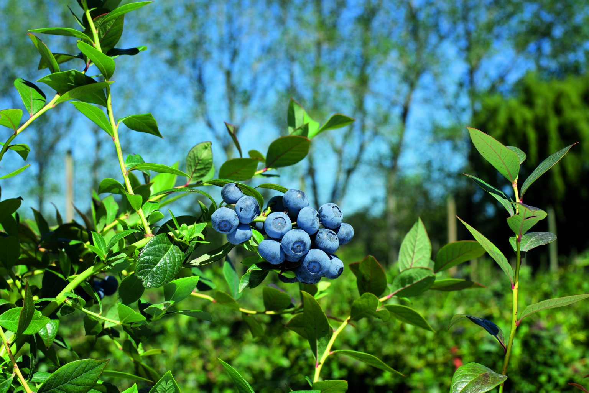
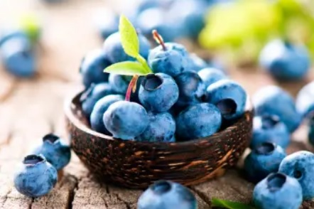

Sobre Mí
Soy [Camilo Alexander Portilla Rosero] me gustaria aprender sobre hidroponia para aplicarla a la siembra y cosecha de arandanos.
Arandanos
 los arándanos son unas bayas globosas, carnosas, diminutas, de entre 6 y 10 milímetros de largo, de color negro azulado, con una corona en su parte superior. Son los frutos del arándano o mirtilo Vacciniummyrtillus, un arbusto o mata baja y a veces rastrera, que se alza entre 15 y 80 cm. sobre el suelo, con el rizoma reptante, que le permite extenderse por el lecho del bosque, y tallos tortuosos. Tiene las hojas dentadas, agudas, verdes por ambas caras, y en la floración presenta unas florecillas discretas, colgantes, agrupadas de dos en dos, con la corola de un tono blanco rojizo. Florece en primavera, y los arándanos suelen madurar a mediados o finales del verano.